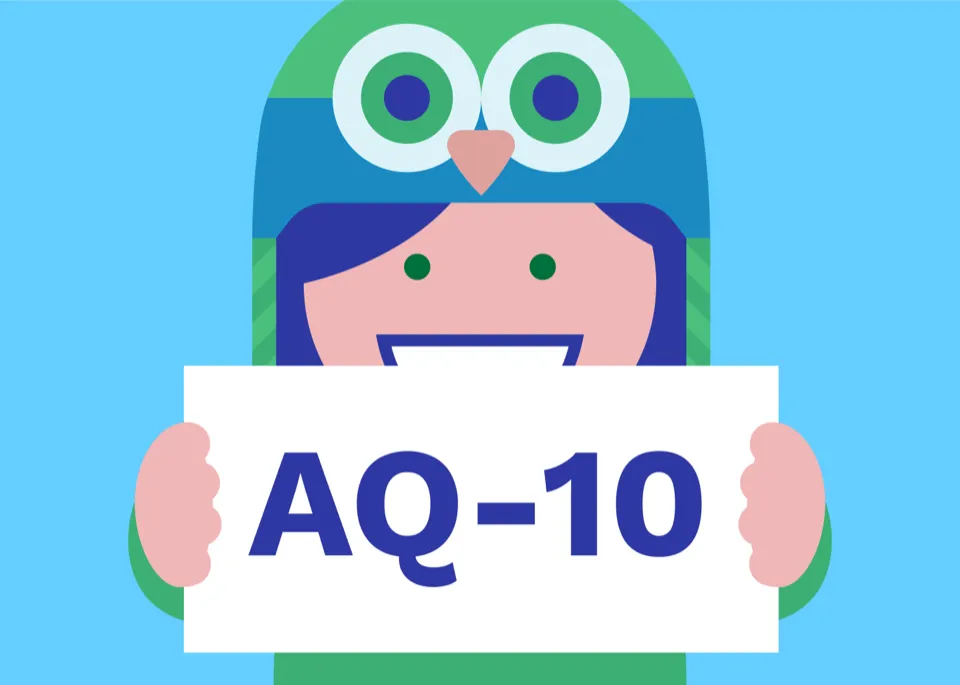
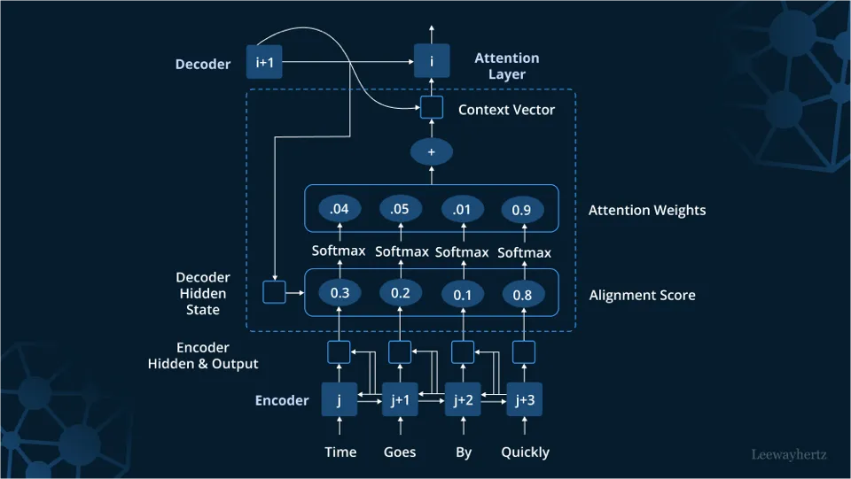
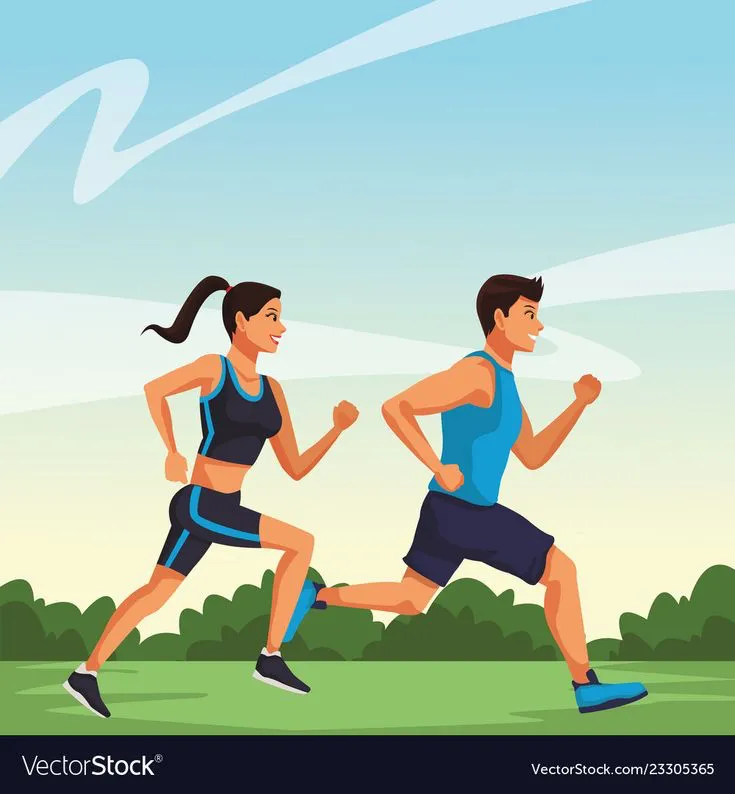

Four AI players at a Vietnamese card table.

pipeline
Predicting a hidden NFL player's motion from the other 21.
pipeline
Predicting autism diagnosis from ten screening answers.

pipeline
Outfit compatibility and recommendations.

pipeline
How much does the attention mechanism change translation quality?

pipeline
Estimating calories from a workout's vitals.

pipeline